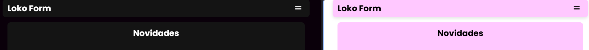

Novidades
Atualização do tema
Devido o tema do Loko Forms antigo poder fazer doer os olhos, ele foi atualizado para um mais suave, seja no tema claro ou escuro.
Novo menu
Com uma repaginada, foi feito o menu para comportar algumas novas opções de importar e exportar configurações do formulário, assim facilitando sua replicação. Como novas funções temos:
Como novas funções temos:
- Importar: Importe configurações do Loko Forms contendo configurações de formulário e templates.
- Exportar: Exporte as configurações atuais do Loko Forms